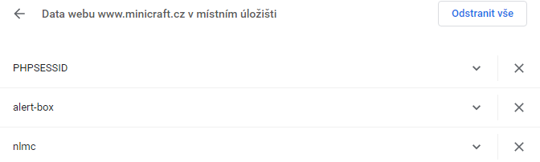

World Wide Web, ve volném překladu „celosvětová pavučina“, je označení pro aplikace internetového protokolu HTTP. Je tím myšlena soustava propojených hypertextových dokumentů. Služba se zrodila se v roce 1989 v evropském vědeckém centru CERN v Ženevě díky Timu Berners-Lee. Za hypertext označujeme takový text, který obsahuje propojení na jiné texty pomocí tzv. hypertextových odkazů. Ve službě WWW jsou realizovány jako tzv. URL odkazy. Služba je založena na spolupráci WWW klientů s WWW serverem. Prvním komerčním prohlížečem webových stránek byl na počátku 90. let minulého století Mosaic. Při jejich spolupráci fungují následující mechanismy: komunikační protokol HTTP, pomocí něhož WWW klient a WWW server komunikují, jazyk HTML, definující formát WWW stránek, které server vrací klientovi. World Wide Web Consortium je mezinárodní konsorcium jehož členové společně s veřejností vyvíjejí webové standardy pro WWW . Konsorciu předsedá Tim Berners-Lee.

Jakou roli plní webový server?
Server je bezobslužný program, který přijímá a obsluhuje požadavky klientů. Na vlastnostech tohoto programu závisí, co server dovede a jaký má výkon.
Příklady serverů
Jak se nazývá program označovaný jako webový klient, co je jeho úkolem?
Klient je program, který komunikuje s uživatelem a na základě jeho pokynů se obrací na jednotlivé servery, získává od nich data a zobrazuje je.
- Mozilla Firefox
- Opera
- Safari
- Google Chrome
- Microsoft Edge
Příklady prohlížečů
Jak probíhá komunikace mezi webovým klientem a webovým serverem?
Základem služby WWW je komunikace mezi webovým klientem a webovým serverem pomocí protokolu HTTP. Při jejich spolupráci fungují následující mechanismy:
Webový server je připojen k počítačové síti a přijímá požadavky v souladu s protokolem HTTP (HTTP Request). Tyto požadavky vyřizuje a počítači, který požadavek vznesl, vrací odpověď.
Odpověď serveru je opět ve tvaru HTTP (HTTP Response), je uvozena hlavičkou obsahující stavový kód, za níž následuje samotný obsah. Obsahem je nejčastěji nějaký HTML dokument včetně mnoha příloh - grafických a multimediálních souborů, souborů CSS, programových souborů (JS) a dalších.
Co je HTTP?
HTTP je jednoduchý aplikační protokol s komunikací charakteru požadavek – odpověď. Žádosti mají formu jednoduchých příkazů a mohou být upřesňovány pomocí různých parametrů, tzv. hlaviček. Odpovědi mají číselný charakter a nejčastěji obsahují i WWW stránku, kterou klient požadoval.
Co jsou to stavové kódy HTTP?
Stavový kód odpovědi udává, zda byl požadavek vyřízen v pořádku, či zda došlo k nějakým obtížím. Dva nejčastější stavové kódy jsou 200 (OK) a 404 (Not Found). Kódy jsou trojciferná čísla.
Stavové kody se dělí:
| Čísla | Kody |
|---|---|
| 1xx | informační zpráva |
| 2xx | úspěšné vyřízení požadavku |
| 3xx | problémy spojené s přesměrováním |
| 4xx | chyby související s vyřízením požadavku (stránka není dostupná, apod.) |
| 5xx | interní chyby serveru |
Proč se stále častěji využívá protokol HTTPS?
HTTPS (HTTP se zabezpečením) je nadstavba protokolu HTTP, která poskytuje zvýšenou bezpečnost před odposloucháváním či podvržením dat. Standardní port na straně serveru je 443 TCP. HTTPS není speciální protokol, protože data jsou přenášena pomocí klasického HTTP: nejsou však přenášena v běžném textu, ale šifrována pomocí SSL nebo TLS (speciální vrstva vložená mezi vrstvu transportní a aplikační), což zaručuje ochranu proti útokům. Pro komunikaci pomocí HTTPS musí nejdříve server vlastnit certifikát. Certifikát musí být podepsán tzv. certifikační autoritou, která zaručí, že vlastník certifikátu se nevydává za nikoho jiného. Webové prohlížeče jsou většinou vybaveny podpisovými certifikáty největších podpisových autorit.
Výhody
- možnost ověření identity, důvěrnost přenášených dat a integrita obsahu; cenou za to je mírně složitější konfigurace webového serveru a potřeba udržování certifikátu
- od ledna 2017 začal prohlížeč Chrome označovat webové stránky, které přijímají od uživatele citlivé informace bez použití HTTPS protokolu. Stránky s HTTPS jsou rovněž zvýhodňovány vyhledávačem Google
Zkratka URL?
URL je řetězec znaků s definovanou strukturou, který slouží k přesné specifikaci umístění zdrojů informací (ve smyslu dokument nebo služba) na Internetu. URL definuje doménovou adresu serveru, umístění zdroje na serveru a protokol, kterým je možné zdroj zpřístupnit.
Co jsou a k čemu slouží tzv. cookies?
Jako cookie (anglicky koláček, oplatka, sušenka) se v protokolu HTTP označuje malé množství dat, která WWW server pošle prohlížeči a ten je uloží na počítači uživatele. Při každé další návštěvě téhož serveru pak prohlížeč tato data posílá zpět serveru. Cookies běžně slouží k rozlišování jednotlivých uživatelů, ukládá se do nich obsah „nákupního košíku“ v elektronických obchodech, uživatelské předvolby apod.
Jaké jsou fáze fungování internetových vyhledávačů?
Internetový vyhledávač na základě své databáze vypisuje seznam odkazů na stránky, které obsahují informace, jež zadal uživatel do formuláře. Databáze je udržována převážně automaticky na rozdíl od internetových katalogů, které jsou udržovány převážně ručně. Cílem vyhledávačů je poskytnout uživateli při odpovědi na dotaz co nejrelevantnější informace, a proto různými způsoby hodnotí důležitost webových stránek, které mají ve své databázi.
Obecně většina internetových vyhledávačů pracuje ve třech krocích:
- Prohledání webových stránek. Pro prohledání webových stránek má internetový vyhledávač automatický program, tzv. vyhledávací robot (crawler, bot, nebo též spider – „pavouk“), který prochází celý webový prostor. Robot dostane na začátku seznam atraktivních vstupních míst (odkazů), jejichž obsah si přečte, uloží do databáze a zapamatuje si navštívenou adresu odkazu, aby se na ni již podruhé nevracel. Z obsahu stažené stránky vybere seznam všech obsažených odkazů a opět všechny odkazy navštíví. Cyklus návštěvy, sesbírání odkazů a dalších návštěv se stále opakuje. Robot se na navštívené stránky vrací v pravidelných intervalech, aby zjistil, zda se na stránce neobjevily nějaké nové informace. Z principu práce vyhledávače vyplývá, že nikdy nemá úplně aktuální informace, ale prezentuje je se zpožděním.
- Indexování. Databázi obsahující uložené obsahy navštívených stránek je potřeba indexovat, aby bylo možné podle zadaných slov co nejrychleji najít adresy stránek, které je obsahují. Zároveň je nutné vystavět index tak, aby poskytoval na prvních místech stránky s nejvyšší užitnou hodnotou (relevancí, mající nejvyšší hodnocení kvality, nejvyšší váhu). Pro výpočet relevance se používají nejrůznější algoritmy, které jsou založeny na nejrůznějších znacích stránek a různých úhlech analýzy jejich obsahu:
- Váha slov. Stránka má vyšší hodnocení, když má hledané slovo na stránce vyšší váhu. Váha slov se zvyšuje, je-li slovo v titulku stránky, nadpisu nebo blíže k začátku stránky, případně se na stránce opakuje. Váhu slov lze zneužít vkládáním atraktivních slov do obsahu stránky bez ohledu na její skutečný obsah nebo prostým opakováním slov. Vyhledávač se brání penalizací (snížením kvality) podezřelých stránek.
- Atraktivita stránky. Stránka má vyšší hodnocení, když na ni odkazuje více jiných stránek, protože zřejmě obsahuje zajímavé informace. Atraktivitu lze zneužít vytvářením falešných stránek, které odkazují na stránku, která má získat vyšší hodnocení. Vyhledávač se brání sledováním podezřelého náhlého hromadění odkazů.
- Serióznost webu. Webové servery, které obsahují velké množství kvalitních stránek, jsou při výpočtu váhy zvýhodněny. Seznam se může udržovat i ručními zásahy.
- Sponzorované odkazy. Váha odkazu se zvyšuje zaplacením poplatku. Seriózní vyhledávače se této praxi vyhýbají nebo zřetelně oddělují výsledky zobrazené na základě komerčního zvýhodnění. Tento způsob je jedním z možných zdrojů příjmů vyhledávače.
- Technická kvalita. Váha odkazu se zvyšuje, pokud jsou stránky správně sestaveny a vyhovují webovým standardům.
- Vyhledávání. Databáze a její index se zpřístupní na vstupní stránce vyhledávače. Uživatel získá po zadání hledaných slov seznam adres, na kterých robot hledaná slova našel. Pro vyšší přehlednost se zobrazuje kromě odkazu ještě titulek stránky, a okolí nalezených slov.
Zkratka HTML a pojem hypertext?
HTML je zkratka pro hypertextový značkovací jazyk, který se používá k vytváření obsahu webové stránky. Obsah webové stránky mohou tvořit texty, obrázky, tabulky, multimédia a další prvky.
Za hypertext označujeme takový text, který obsahuje propojení na jiné texty pomocí tzv. hypertextových odkazů. Ve službě WWW jsou realizovány jako tzv. URL odkazy.